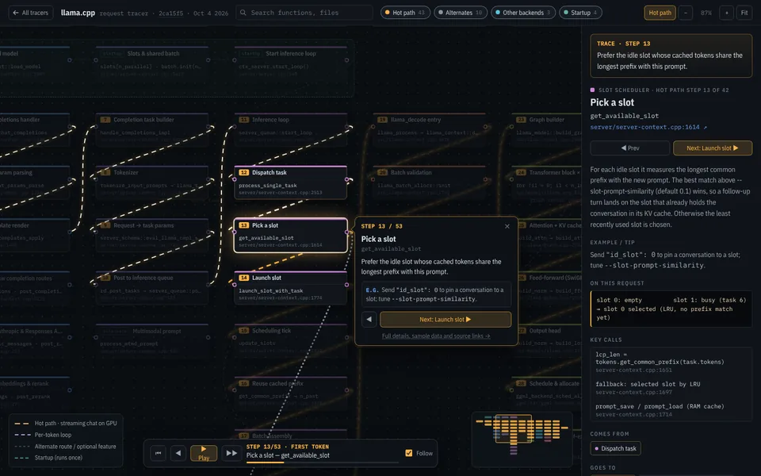
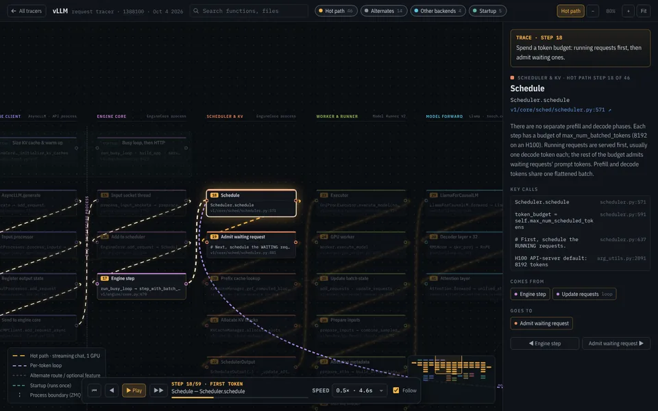
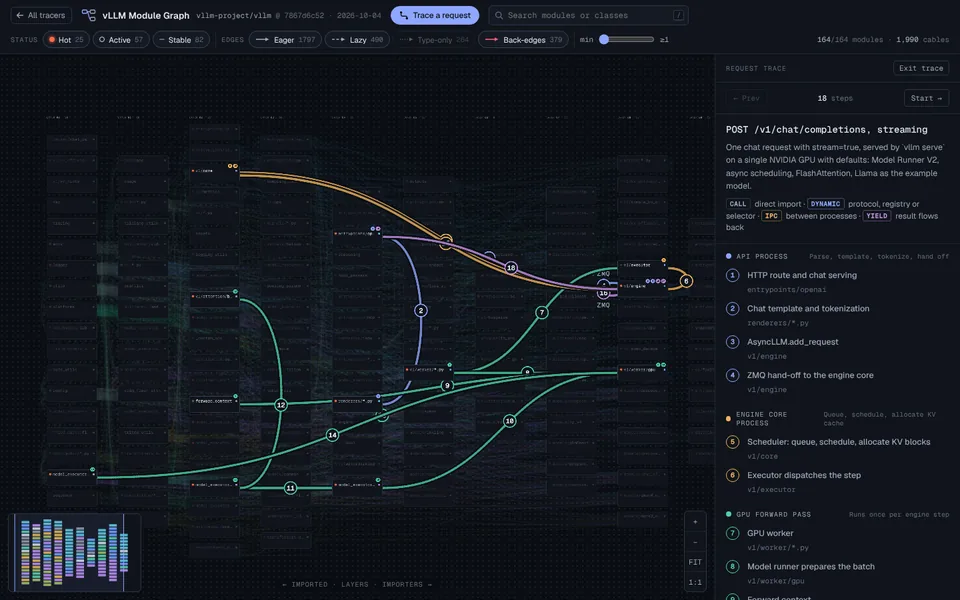

I wanted to understand what happens between a chat request arriving and the tokens streaming back. So I picked two open-source inference servers, llama.cpp and vLLM, read the code along one request's path, and turned my notes into maps you can step through.
I'm learning this as I go. These maps simplify a lot, each one is pinned to a single commit, and some of it is probably wrong. If you know these codebases, corrections are very welcome.
A narrated walk through the llama.cpp map as a collage film: the same request, the same steps, the real function names. Watch it first, then open the tracer to step through at your own pace.

One streaming chat request through llama-server. An HTTP thread builds the task, a single inference thread batches it into a decode step, ggml runs the graph on the GPU, and tokens flow back as server-sent events.

The same request through vllm serve. It crosses over ZMQ into the EngineCore process for scheduling, paged KV cache, the GPU forward pass and sampling, then crosses back to be detokenized and streamed. Has a speed control.

A wider view: how vLLM's Python modules import each other, with the same request traced across them in 18 steps. Useful for seeing where the request path sits in the whole codebase.
These are the lanes from each tracer, left to right. Dashed lines are where the request is handed to another thread or process. The purple bracket is the part that runs again for every output token.
Scroll the strips sideways to see every lane.
| What | llama.cpp | vLLM |
|---|---|---|
| Where the work runs | One process. Each HTTP request gets a pool thread that builds tasks and waits. A single inference thread does all the model work. | Two processes. The API process runs one asyncio event loop for HTTP, templating and tokenizing. The EngineCore process owns scheduling and the GPU. |
| Batching | A fixed number of slots (--parallel). Each tick adds one token per generating slot, fills the rest of the batch with prompt tokens, and makes one llama_decode call. |
Each step spends a token budget (max_num_batched_tokens). Running requests go first, then waiting prompts. Prefill and decode tokens share one flat batch. |
| Reusing a prompt | Picks the idle slot whose cached tokens share the longest prefix with the new prompt, keeps that part of its KV cache, and only evaluates the rest. | Hashes the prompt in 16-token blocks and reuses any block already in the cache, even one computed for a different request. |
| KV cache memory | Finds free cells for each micro-batch. If there is no room, the server retries with a smaller batch. | Hands out 16-token blocks from a shared pool. If the pool runs dry, the scheduler preempts a running request and recomputes it later. |
| Running the model | Builds a ggml compute graph and reuses it when the next decode step has the same shape. On NVIDIA GPUs, decode steps can replay a captured CUDA graph. | Runs a torch.compiled PyTorch model. Decode-only batches replay one full CUDA graph, and the CPU schedules the next step while the GPU is still on this one. |
| Getting text back | The inference thread turns each token into text and checks stop strings, then wakes the waiting HTTP thread, which writes the SSE chunk. | Token ids go back over ZMQ. The API process turns them into text, checks stop strings, and writes the SSE chunk. |
Describes the default setups the tracers assume: a llama.cpp GPU build with all layers offloaded, and vllm serve meta-llama/Llama-3.1-8B-Instruct on one H100. Most of this is configurable.
I cloned each repository at a fixed commit and read along the request path with Claude as a reading partner. Every box links to the file and line it describes, and a small script re-checked those references against the pinned commit. Token ids, probabilities and KV block numbers in the examples are made up to illustrate the shape of the data.